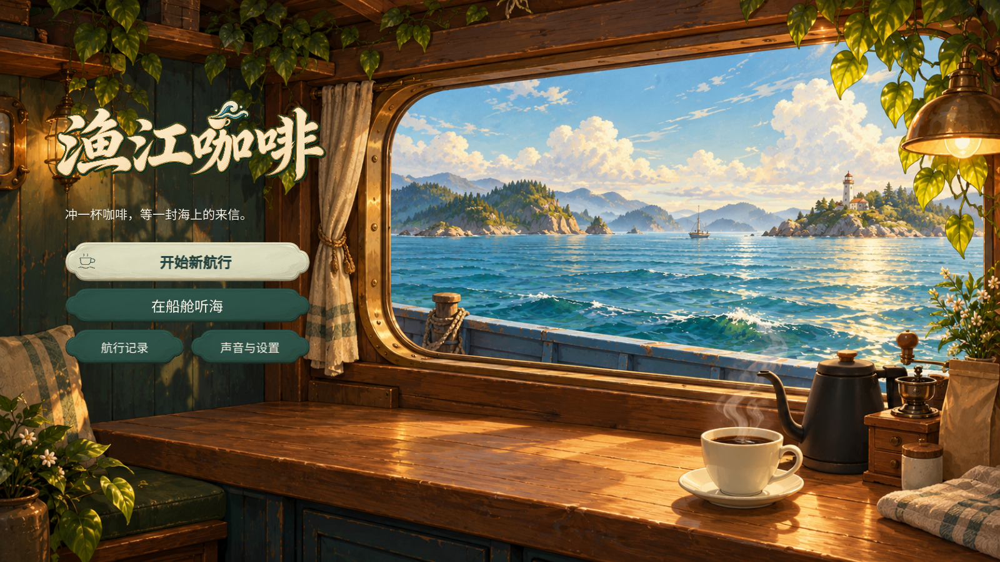
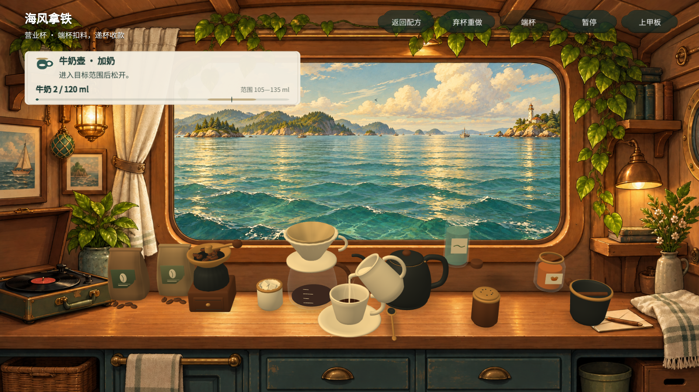
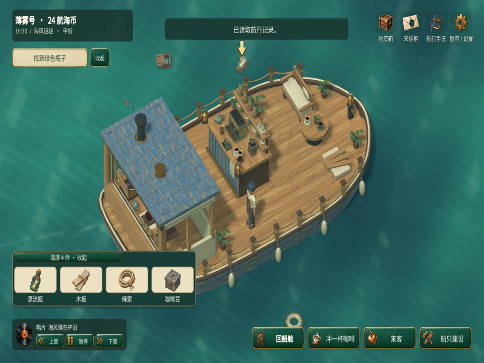

AI 游戏作品 / 海上经营
渔江咖啡.
开一间在海上漂流的咖啡馆。
玩家在甲板打捞物资和漂流瓶，回船舱冲泡咖啡，再用营业收入与材料改造渔船。


Unity · Windows 可玩开发版 0.34.0
开场、冲泡实录与常规玩法图来自 Windows 0.16.0。订单与备料案例来自 Windows 0.26.0。新版引导与倒豆采用 Windows 0.34.0 实机截图。均使用隔离测试存档。
今天捞上来的东西，拿来煮咖啡、改船
常见物资漂到船边就能收。咖啡原料用来出杯，船材则和营业收入一起投入下一次升级。


按住倒水，松手停下
把滤杯放好，拿起水壶注水，再加料或搅拌。做错了可以弃杯重来。完成一杯才扣配方材料，把咖啡递给来客后结算收入。


把提示留在玩家接下来要做的动作旁
0.34.0 把从上船到冲泡的引导合为四段。甲板上只留一行当前操作，完整说明可以在航行指南里重看。工作台的黄铜箭头指向下一件器具，尽量避开按钮、提示和可点击区域。用量和重做说明到倒豆时再出现。
普通豆与低因豆采用同一套抬起、侧倾与归位操作。倒豆时，豆粒从磨豆斗前侧落入，避开中心轴。玩家换用另一袋豆时可以沿用刚学会的动作。



先完成手里的订单，再把收入投回渔船
以阿澄的奶咖任务为例。遇到一张未完成的订单，手记会引导玩家先找原来的客人。还没开做就回到原配方，成品已在手里就直接递杯。按原订单收款后，可以从回执继续找阿澄，亲手做完他想喝的海风拿铁。
建造协作角时，面板会指出缺的是钱还是材料。少钱可以接日常订单，缺材料就上甲板打捞，也可以先听望仔的故事。装好设施并约好第一份活后，望仔能帮忙收普通海漂，玩家仍亲自处理稀有漂浮物和漂流瓶。
下方两张图来自 0.26.0 Windows 开发版隔离存档。


熟客会再来，海上也会漂来信


当前默认离线收系统信。玩家短笺投递和抽取已完成本机联调。
回船舱听唱片，看天色慢慢变
从甲板回到船舱，可以看海、听唱片，也可以拿起桌上的器具练习冲泡。窗外随本地昼夜变换，偶尔有海鸟飞过。